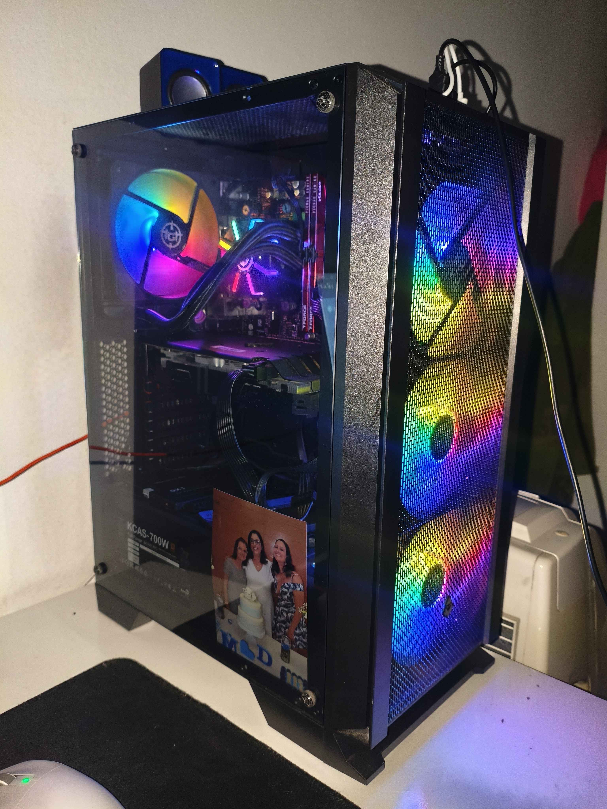
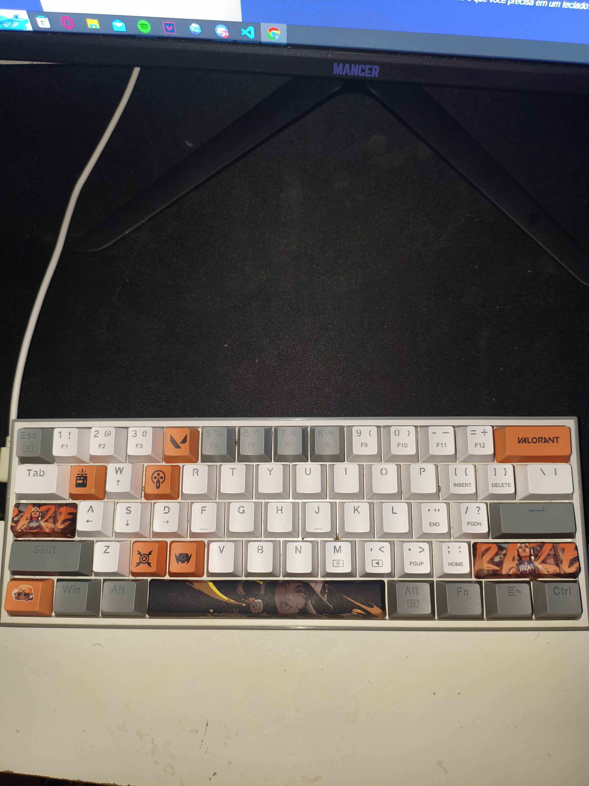
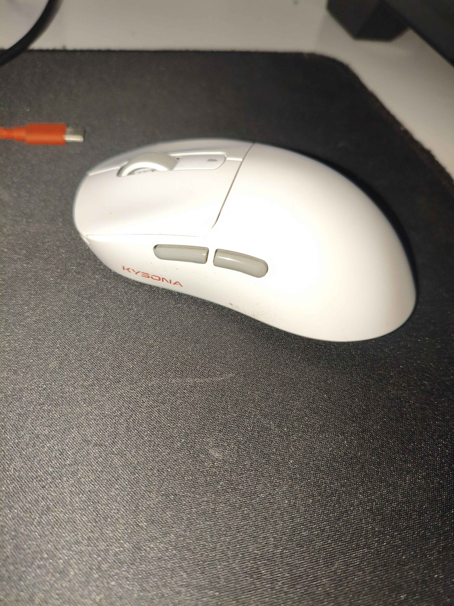
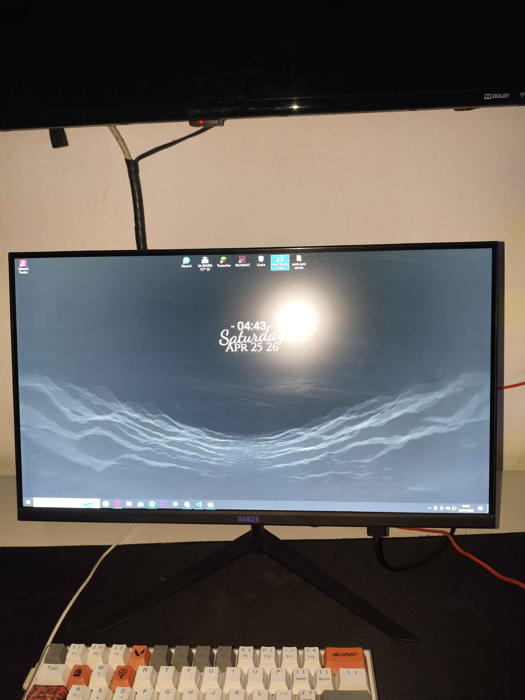

PC gamer equilibrado, ideal para quem busca bom desempenho em jogos e tarefas do dia a dia.
Equipado com placa de vídeo RX 5500, oferece ótima performance em títulos competitivos e boa
qualidade gráfica.
Conta com placa-mãe B450, garantindo estabilidade e possibilidade de upgrades, além de 16GB
de memória RAM (2x8GB), proporcionando fluidez em multitarefas.
O armazenamento em SSD de 512GB garante inicialização rápida do sistema e carregamentos
ágeis. Acompanha fonte de 700W, oferecendo energia estável para todo o setup.
🔥 Um setup confiável, rápido e pronto para rodar seus jogos com qualidade.

O teclado 60% da Redragon é a escolha ideal para quem busca desempenho, praticidade e um
visual
moderno. Com design compacto, ele ocupa menos espaço na mesa, proporcionando mais conforto e
liberdade de movimento — perfeito para gamers e usuários que valorizam agilidade. Equipado
com
switches de alta qualidade, oferece resposta rápida e precisa em cada tecla. Além disso,
conta
com iluminação RGB personalizável, garantindo um setup estiloso e imersivo. Sua construção
robusta e durável garante longa vida útil, enquanto o formato reduzido mantém todas as
funções
essenciais através de atalhos inteligentes.
🔥 Compacto, potente e estiloso — tudo o que você
precisa em um teclado.

Mouse Kysona desenvolvido para oferecer precisão, conforto e desempenho em qualquer
situação. Ideal para jogos e uso diário, conta com sensor responsivo e alta sensibilidade,
garantindo movimentos rápidos e precisos.
Seu design ergonômico proporciona conforto mesmo em longas sessões, enquanto a construção
leve melhora a agilidade durante o uso. Além disso, possui iluminação moderna que
complementa seu setup.
🔥 Precisão, conforto e estilo em um só mouse.

Monitor Mancer voltado para quem busca custo mais baixo, mas com algumas limitações
importantes. A qualidade de construção é simples e pode não transmitir tanta durabilidade
quanto marcas mais consolidadas.
A imagem atende ao básico, porém pode apresentar cores menos precisas e brilho limitado, o
que impacta a experiência em jogos e uso prolongado. Dependendo do modelo, o painel também
pode ter ângulos de visão mais restritos.
Além disso, o acabamento e os materiais costumam ser mais básicos, e o suporte pode não
oferecer muitos ajustes.
⚠️ Indicado para uso casual, mas pode deixar a desejar para quem busca qualidade de imagem
ou maior imersão.